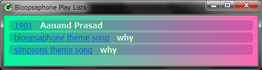
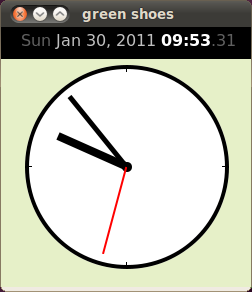

The Green Shoes Manual 0.221.0
Introducing Green Shoes
How does Green Shoes look on OS X and Linux? Does it really look okay? Is it all ugly and awkward? People must immediately convulse! It must be so watered down trying to do everything.
Well, before getting into the stuff about installing and running Green Shoes, time to just check out some screenshots, to give you an idea of what you can do.
Mac OS X
Green Shoes is confirmed on Apple Mac OSX10.5 PPC via X11. 
This is the sample3.rb on Mac OS X.
All circles are drawn randomly. You can draw and animate shapes in Green Shoes.
Windows
Green Shoes is confirmed to run on Microsoft Windows XP and Windows 7. 
Above is pictured the sample33.rb running on Windows 7. Green Shoes has three extended libraries for chipmunk physics, bloopsaphone and 3D texture mapping. First two are binary libraries, so far work on Windows only.
Linux
Here's a screenshot of the sample44.rb running on Ubuntu on VirtualBox for Windows. 
This example is also draws ovals and lines to build the clock, which is animated to show or hide itself several times each second.
Notice the text on the top of the app, showing the current time. Green Shoes has the skills to layout words using any color, bold, italics, underlines, and supports loading fonts.
Next: Installing Green Shoes